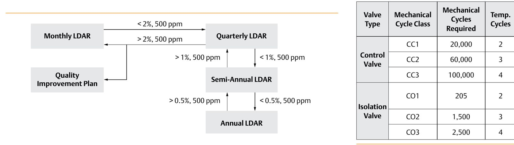

Confirm the Packing Is Emissions-Qualified for the Service
Regulations require periodically testing installed valves for fugitive emissions — VOC/LDAR programs set the monitoring interval, and ISO 15848-1 sets the qualification a packing system has to pass. Pick an unqualified packing for the service and the valve can fail that mandated test, not just leak on the bench.

After Control Valve Handbook, 6th ed., Figs. 3.25, 3.26 — used directly, combined side by side. Component Index: cvh-cmp-voc-ldar-measurement-frequency, cvh-cmp-iso15848-1-qualification-requirements.